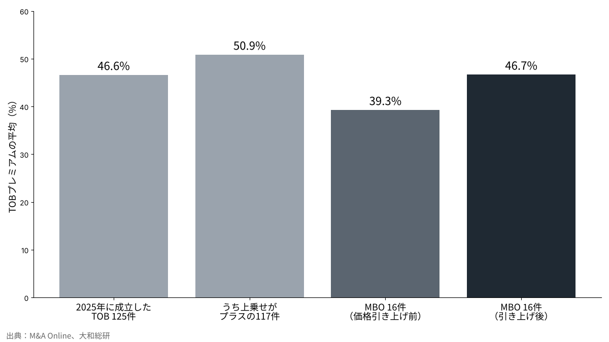

TOBのプレミアムは平均46.6%。物言う株主が入った非公開化ほど高くなるのか――2025年のTOB 125件とMBO 16件、豊田自動織機の引き上げで検証
日本で物言う株主（アクティビスト）の活動が過去最多となり、上場をやめる会社も増えている。東京商工リサーチによると、2025年に上場廃止を前提にしたTOBは80社、経営陣による買収（MBO）は32社で、合わせて112社にのぼった。
非公開化では、買い手が市場の株価に上乗せした価格で株を買い取る。この上乗せ分をプレミアムと呼ぶ。物言う株主は、この価格が安すぎると声を上げることが多い。
本稿の問いは、物言う株主が入った非公開化ほど、プレミアムは高くなっているのか、である。
- 2025年に成立したTOB 125件のプレミアムの平均は46.64%で、上乗せがプラスの117件に限ると50.88%だった。
- 2025年6〜11月のMBO 16件では、平均が価格引き上げ前の39.3%から引き上げ後の46.7%へ、7.4ポイント上がった。引き上げの多くは株主の反対を受けたものだ。
- 豊田自動織機は、米エリオットの反対の後、1株16,300円から20,600円へ26.4%引き上げられた。物言う株主は平均を数ポイント押し上げ、個別の案件では2割を超えて動かしうる。

問いと背景
まず言葉をそろえる。TOB（株式公開買付け）とは、市場の外で、期間と価格を示して株主から株を買い集める方法だ。非公開化を目的とするTOBでは、成立した後に残りの株主から株を買い取り、上場を廃止する。
プレミアムは、TOBの価格が、発表前の株価をどれだけ上回っているかを示す。たとえば発表前の株価が1,000円で、TOBの価格が1,500円なら、プレミアムは50%になる。比べる株価には、前日の終値のほか、1か月や3か月の平均が使われる。
物言う株主とは、株を持ったうえで、配当の増額や資本の使い方の見直しなどを会社に求める投資家を指す。日本総合研究所は、狙われやすい会社の特徴として、株価純資産倍率（PBR）が低い、負債が少ない、現金が多い、金融機関の持ち分が少ない、外国人の持ち分が多い、の5つを挙げている。
非公開化が増えた背景には、東京証券取引所が2023年に出した「資本コストや株価を意識した経営」の要請や、上場を続けるための基準の厳格化がある。大和総研によると、2024年の東証の非上場化は94社と過去最多だった。物言う株主への対応も、上場を続ける費用の1つとして意識されるようになった。
データと方法
使うデータは4つある。1つ目は、M&A Onlineが集計した2025年に買付けを始めて成立したTOBのうち、非上場を除く125件のプレミアムの平均だ。2つ目は、大和総研が2025年6月から11月に公表されたMBO 16件を整理した分析で、価格を引き上げる前と後の平均が示されている。
3つ目は、東京商工リサーチの2025年の上場廃止を前提にしたTOB・MBOの調査で、買い手の種類と不成立の事例がわかる。4つ目は、個別の大型案件として、豊田自動織機の非公開化を取り上げる。
物言う株主が入っていたかどうかで案件を二つに分け、平均を直接比べた公開の統計は見つからなかった。そこで本稿では、価格が引き上げられた幅を、物言う株主や一般の株主の反対が価格を動かした大きさの目安として使う。
結果
| 指標 | 値 | 出典 |
|---|---|---|
| 2025年に成立したTOB（非上場を除く125件）の平均プレミアム | 46.64% | M&A Online |
| うち上乗せがプラスの117件の平均 | 50.88% | M&A Online |
| MBO 16件（2025年6〜11月）の平均・引き上げ前 | 39.3% | 大和総研 |
| 同・引き上げ後 | 46.7% | 大和総研 |
| 2025年の上場廃止を前提にしたTOB・MBO | 112社（TOB 80・MBO 32） | 東京商工リサーチ |
| うち買い手がファンド（物言う株主を含む） | 22社（約3割） | 東京商工リサーチ |
| 豊田自動織機のTOB価格 | 16,300円→20,600円（+26.4%） | 報道・開示 |
2025年に成立したTOB 125件のプレミアムの平均は46.64%だった。上乗せがプラスの117件に限ると、50.88%になる。上場企業を非公開にするには、市場の株価に5割前後を上乗せするのが、2025年の平均的な姿だったことになる。
大和総研が整理したMBO 16件では、平均のプレミアムは価格を引き上げる前が39.3%、引き上げた後が46.7%だった。引き上げによって、平均は7.4ポイント上がった。16件のうち、2026年1月時点で12件が成立し、2件が不成立、2件が期間を延長していた。

不成立に終わった案件には、物言う株主の動きがはっきり出ている。東京商工リサーチによると、ソフト99コーポレーションとウェーブロックホールディングスは、MBOの発表後に既存の株主や物言う株主から価格の引き上げを求められ、応募が下限に届かずに不成立となった。ソフト99では、その後ファンドが上場廃止を前提としない対抗のTOBを行い、成立している。
個別の案件で最も大きく動いたのが、豊田自動織機だ。2025年6月に1株16,300円で非公開化のTOBが提案されたが、当初の価格は市場の株価を下回っていた。米エリオット・マネジメントの反対を受けて価格は20,600円へ引き上げられ、引き上げ幅は26.4%になった。TOBは2026年3月に成立し、総額は約5兆9,000億円と、日本企業どうしのM&Aとして過去最大になった。
東京商工リサーチの調査では、2025年に上場廃止を前提にTOB・MBOを発表した112社のうち、5社が不成立に終わった。割合は5%に満たないが、その中に株主の反対で価格が争点になった案件が含まれている。価格が低すぎれば、非公開化そのものが成り立たなくなる。
なぜ価格は引き上げられるのか
MBOでは、経営陣が買い手になり、株を売る側の株主と利害がぶつかる。そのため、社外の委員による特別委員会の設置や、第三者による株式価値の算定など、公正さを示す手続きが標準になってきたと大和総研は整理している。手続きがそろっていても、価格そのものへの不満までは消えない。
大和総研によると、プレミアムが45〜50%と高い案件でも、TOBの価格を株価純資産倍率（PBR）1倍未満に置いた会社には、一般の株主から価格が妥当かという批判が出ている。市場の株価に対する上乗せが大きくても、会社の純資産より安ければ、株主は安く買われると受け止める。物言う株主が突くのは、多くの場合この点だ。
東京商工リサーチの調査では、2025年のTOBの買い手で最も多かったのは、物言う株主を含むファンドで、22社と約3割を占めた。ファンドは、株主として価格に声を上げる側にも、買い手として価格を出す側にも立っている。非公開化の価格は、こうした交渉の中で決まっていく。
感度分析
物言う株主がどれだけ価格を動かすかは、案件によって大きく違う。ここでは、発表時のプレミアムを40%と置き、反対によって価格が引き上げられる場合を3つに分けて計算した。
引き上げがない場合、株主が受け取る上乗せは40%のままだ。大和総研の16件の平均と同じく価格が約5.3%引き上げられる場合、上乗せは発表前の株価に対しておよそ47%になる。豊田自動織機と同じく26.4%引き上げられる場合、上乗せはおよそ77%まで広がる。
つまり、平均で見れば物言う株主の効果は数ポイントだが、1件ごとに見ると、発表時の価格が安いほど、反対によって動く幅は大きくなる。発表時に市場の株価を下回っていた豊田自動織機は、その極端な例だった。
限界
第一に、物言う株主が株主名簿にいたかどうかで案件を分けた統計を、本稿は使えていない。価格の引き上げには、物言う株主だけでなく、一般の株主や特別委員会の判断も効いている。引き上げ幅をそのまま物言う株主の効果とは言い切れない。
第二に、プレミアムの計算に使う株価が、資料によって前日の終値だったり3か月の平均だったりする。発表前に株価が上がっていた案件では、プレミアムは小さく見える。
第三に、不成立の案件や、発表されずに終わった案件は平均に入らない。物言う株主に高い価格を求められて非公開化をあきらめた会社があれば、その分は数字に表れない。
結論
2025年の非公開化では、市場の株価に5割前後を上乗せするのが平均的な姿だった。MBOでは、株主の反対を受けて平均が7ポイントほど引き上げられ、豊田自動織機のように2割を超えて価格が動いた案件もある。物言う株主が入った非公開化ほど価格が高くなる、と断定できるデータはまだない。それでも、反対の声が価格を押し上げる道筋は、数字の上でも確かめられる。
上場している会社の株主にとって、非公開化は売り時を自分で選べない出来事になる。発表時の価格が純資産や市場の株価に比べて安いと思えば、応募しないという選択がある。逆に上場していない会社の経営者にとっては、こうした圧力から自由でいられることが、上場しない理由の1つになっている。
参考文献
- 東京商工リサーチ「2025年、上場廃止への「TOB・MBO」は112社」 https://www.tsr-net.co.jp/data/detail/1202318_1527.html
- 大和総研「直近のMBO案件の特徴と実務上の論点」2026年1月27日 https://www.dir.co.jp/report/consulting/ma_valuation/20260127_025531.pdf
- M&A Online「TOBプレミアムランキング（2025年）」 https://maonline.jp/db/tob/2025/ranking_premiere
- 日本総合研究所「アクティビストの動向と本邦上場企業に求められる対応」2026年4月23日 https://www.jri.co.jp/report/researchfocus/detail/16651/
- 大和総研「増える「非上場化」と商機を見出すアクティビスト投資家」2025年3月3日 https://www.dir.co.jp/report/column/20250303_012229.html
- 第一生命経済研究所「持っている株がMBOに？さあ、どうする」2026年6月8日 https://www.dlri.co.jp/files/asset/617820.pdf
- the-shashi「豊田自動織機の非公開化」 https://the-shashi.com/tse/6201/decisions/take-private-toyota-2025/
- ロイター「日本企業のM&A、海外勢による買収は過去最多」 https://www.newsweekjapan.jp/articles/-/328158
図はYUKI CAPITALが作成。トップ画像もYUKI CAPITALが作成。本記事は筆者自身の記録であり、投資助言ではない。
日々の数字と判断は、Xで記録している。